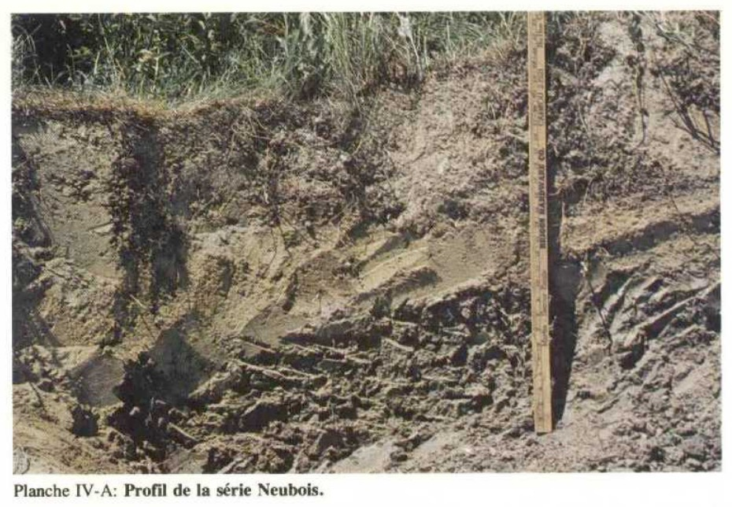

Identification & Caractéristiques Générales
La série Saint-Isidore s'est développée sur des dépôts marins ou deltaïques à texture fine, constitués de sédiments argileux et limoneux mis en place lors de la mer de Champlain, lesquels recouvrent souvent des tills ou des substrats morainiques. Sur le plan géomorphologique, ces sols occupent des positions topographiques planes à légèrement ondulées dans les basses-terres du Saint-Laurent, caractérisées par des pentes généralement faibles oscillant entre 0,5 % et 5 %. Cette topographie restreint l'écoulement latéral des eaux de surface et favorise une accumulation locale des eaux de ruissellement, particulièrement dans les micro-dépressions.
Le profil morphologique montre une différenciation marquée des horizons pédologiques, typique des gleysols ou des brunisols selon le régime hydrique. La texture dominante varie de l'argile limoneuse à l'argile lourde dans le solum, conférant au matériau une compacité élevée et une perméabilité interne modérée à lente. Le drainage naturel est généralement jugé imparfait à médiocre, la présence d'une nappe phréatique perchée temporaire au printemps ou en période de fortes précipitations étant fréquente. La structure est polyédrique subangulaire à prismatique dans les horizons B et C, et la réaction du sol (pH) s'échelonne de légèrement acide à neutre, bien que des variations dictées par le lessivage des bases puissent être observées.
Sur le plan agronomique, les sols de la série Saint-Isidore sont principalement dévolus aux grandes cultures céréalières et protéagineuses ainsi qu'aux prairies pluriannuelles. La principale limitation à leur mise en valeur demeure l'excès d'eau temporaire et la battance des horizons de surface, qui restreignent la portabilité des engins lourds et exigent l'installation systématique d'un réseau de drainage souterrain (tuyauterie latérale). La régie des cultures nécessite également un contrôle rigoureux du travail du sol pour éviter la compaction excessive et le lissage des horizons de surface, tandis que l'apport d'amendements calcaires peut s'avérer nécessaire pour optimiser la disponibilité des éléments nutritifs selon le pH mesuré.
Classification Taxonomique & Environnement Pédologique
| Ordre Pédologique | Organique |
|---|---|
| Grand Groupe (SCSS) | Mésisol humique |
| Sous-Groupe Taxonomique | Mésisol humique |
| Famille Pédologique | Mésique, ne s'applique pas, dysique |
| Mode de Dépôt Parental | Organique non différencié |
| Classe de Drainage Naturel | Très mal drainé |
| Régime Thermique & Humidité | Doux / Aquique |
Description Morphologique du Profil Type
Description Morphologique du Solum
Aucune coupe pédologique chiffrée avec nomenclature détaillée des horizons n'a été publiée sous forme de tableau dans les mémoires originaux pour cette unité. Les rapports d'inventaire la définissent par son matériau d'origine (Organique non différencié), sa texture dominante (Matière organique humifiée) et sa classe de drainage naturel (Très mal drainé).
Profils Photographiques & Planches de Terrain
Documents iconographiques, figures pédologiques et coupes de terrain documentées dans les mémoires d'inventaire pour de la série Saint-Isidore :

Propriétés Physico-Chimiques & Analyses de Laboratoire
| Horizon | Prof. (pces) | pH | C org. % | N % | C/N | Sable grossier % | Sable fin % | Sable tot. % | Limon % | Argile % | Ca éch. | Mg éch. | K éch. | Na éch. | Bases tot. | C.E.C. | Saturation % |
|---|---|---|---|---|---|---|---|---|---|---|---|---|---|---|---|---|---|
| Étage supérieur | N | 0 | 0 | 0 | 0 | 0 | 0 | 0 | 0 | 1 | 0 | 0 | 0 | 0 | 0 | 0 | 9 |
| Moyenne | - | - | - | - | - | - | - | - | 50,9 | - | - | - | - | - | - | ||
| Inférieure | - | - | - | - | - | - | - | - | - | - | - | - | - | - | - | ||
| Supérieure | - | - | - | - | - | - | - | - | - | - | - | - | - | - | - | ||
| CV | - | - | - | - | - | - | - | - | - | - | - | - | - | - | - | ||
| Étage intermédiaire | N | 0 | 0 | 0 | 0 | 0 | 0 | 0 | 1 | 2 | 1 | 1 | 1 | 1 | 1 | 1 | |
| Moyenne | - | - | - | - | - | - | - | 5,1 | 49,10 | 45,0 | 10,28 | 1,11 | 0,32 | 126,4 | 151,2 | ||
| Inférieure | - | - | - | - | - | - | - | - | 38,61 | - | - | - | - | - | - | ||
| Supérieure | - | - | - | - | - | - | - | - | 62,37 | - | - | - | - | - | - | ||
| CV | - | - | - | - | - | - | - | - | 1,3 | - | - | - | - | - | - | ||
| Étage inférieur | N | 0 | 0 | 0 | 0 | 0 | 0 | 0 | 2 | 1 | 1 | 1 | 1 | 1 | 1 | 1 | |
| Moyenne | - | - | - | - | - | - | - | 5,1 | 40,49 | 56,2 | 20,35 | 0,62 | 0,40 | 139,8 | 95,6 | ||
| Inférieure | - | - | - | - | - | - | - | 2,8 | - | - | - | - | - | - | - | ||
| Supérieure | - | - | - | - | - | - | - | 7,3 | - | - | - | - | - | - | - | ||
| CV | - | - | - | - | - | - | - | 9,8 | - | - | - | - | - | - | - |
Particularités Régionales, Phases & Variantes Pédologiques
Déclinaisons régionales, faciès texturaux, phases d'érosion ou de pierrosité et variantes cartographiées par étude pour de la série Saint-Isidore :
| Étude Régionale | Symbole | Appellation / Phase / Variante | Différenciation avec la série type (Analyse pédologique) |
|---|---|---|---|
| Comté de Laprairie | IS9 |
Saint-Isidore humique | Modalité modale de référence (type de base de la série). |
| Comté de Napierville | IS |
Saint-Isidore | Conforme à la série type de référence (caractéristiques texturales et drainage identiques). |
Distribution Pédo-Paysagère & Représentativité Cartographique (Couverture PPS 2026)
- Nobel (NBL) — co-occurrente dans 9 polygone(s)
- Saint-Dominique (SDE) — co-occurrente dans 2 polygone(s)
Aptitudes Agronomiques, Hydropédologie & Conservation des Sols
Indicateurs Hydropédologiques & Vulnérabilité à l'Érosion (BDHP 2026)
Interprétation BDHP : Potentiel de ruissellement modérément élevé. Faible taux d'infiltration, présence d'horizons ralentissant le drainage descendant.
Classement selon l'Inventaire des Terres du Canada (ITC / CLI) : Classe 4w / 5w (Classe O).
- Potentiel agricole : Terroir adapté aux cultures régionales selon la texture dominante et la régie de drainage.
- Contraintes majeures : Très mal drainé. Risque d'engorgement temporaire ou d'excès d'eau printanier.
- Gestion & Aménagement : Drainage souterrain ou superficiel préconisé sur les terres planes. Chaulage et apport organique régulier selon les bilans agronomiques.
- Cultures adaptées : Grandes cultures (maïs, soya, céréales), prairies fourragères et cultures maraîchères selon le contexte géomorphologique.